吴恩达深度学习笔记汇编2-2：改善深层神经网络
吴恩达深度学习笔记汇编2-2：改善深层神经网络：超参数调试、正则化以及优化(Improving Deep Neural Networks:Hyperparameter tuning, Regularization and Optimization)
这部分知识是我在学习吴恩达的深度学习课程时对其笔记的汇总与编注。
这节笔记内容上基本没有什么问题，解释的也都很清楚，也没有很难的公式推导，所以基本就照搬了原笔记，只有一部分小改动
课程地址：【[双语字幕]吴恩达深度学习deeplearning.ai】 https://www.bilibili.com/video/BV1FT4y1E74V
优化算法 (Optimization algorithms)
Mini-batch 梯度下降（Mini-batch gradient descent）
本周将学习优化算法，这能让你的神经网络运行得更快。机器学习的应用是一个高度依赖经验的过程，伴随着大量迭代的过程，你需要训练诸多模型，才能找到合适的那一个，所以，优化算法能够帮助你快速训练模型。
其中一个难点在于，深度学习没有在大数据领域发挥最大的效果，我们可以利用一个巨大的数据集来训练神经网络，而在巨大的数据集基础上进行训练速度很慢。因此，你会发现，使用高效的优化算法能够大大提高你和团队的效率，那么，我们首先来谈谈mini-batch梯度下降法。

你之前学过，向量化能够让你有效地对所有 个样本进行计算，允许你处理整个训练集，而无需某个明确的公式。所以我们要把训练样本放大巨大的矩阵 当中去， ， 也是如此， ，所以 的维数是 ， 的维数是 ，向量化能够让你相对较快地处理所有 个样本。如果 很大的话，处理速度仍然缓慢。比如说，如果 是500万或5000万或者更大的一个数，在对整个训练集执行梯度下降法时，你要做的是，你必须处理整个训练集，然后才能进行一步梯度下降法，然后你需要再重新处理500万个训练样本，才能进行下一步梯度下降法。所以如果你在处理完整个500万个样本的训练集之前，先让梯度下降法处理一部分，你的算法速度会更快，准确地说，这是你可以做的一些事情。
降低细粒度（或许可以这么理解？）或者是在训练集中进行更多次更多的梯度下降，甚至说训练集处理和梯度下降的并行化提升
你可以把训练集分割为小一点的子集训练，这些子集被取名为mini-batches，假设每一个子集中只有1000个样本，那么把其中的 到 取出来，将其称为第一个子训练集，也叫做mini-batch，然后你再取出接下来的1000个样本，从 到 ，然后再取1000个样本，以此类推。
接下来我要说一个新的符号，把 到 称为 ， 到 称为 ，如果你的训练样本一共有500万个，每个mini-batch都有1000个样本，也就是说，你有5000个mini-batch，所以最后得到是
对 也要进行相同处理，你也要相应地拆分 的训练集，所以这是 ，然后从 到 ，这个叫 ，一直到 。
mini-batch的数量 组成了 和 ，这就是1000个训练样本，包含相应的输入输出对。
在继续课程之前，先确定一下我的符号，之前我们使用了上角小括号 表示训练集里的值，所以 是第 个训练样本。我们用了上角中括号 来表示神经网络的层数， 表示神经网络中第 层的 值，我们现在引入了大括号 来代表不同的mini-batch，所以我们有 和 ，检查一下自己是否理解无误。

和 的维数：如果 是一个有1000个样本的训练集，或者说是1000个样本的 值，所以维数应该是 ， 的维数应该是 ，以此类推。因此所有的子集维数都是 ，而这些（ ）的维数都是 。
其实也就是说， 变为了 的三维矩阵，其中
解释一下这个算法的名称，batch梯度下降法指的是我们之前讲过的梯度下降法算法，就是同时处理整个训练集，这个名字就是来源于能够同时看到整个batch训练集的样本被处理，这个名字不怎么样，但就是这样叫它。
相比之下，mini-batch梯度下降法，指的是我们在下一张幻灯片中会讲到的算法，你每次同时处理的单个的mini-batch 和 ，而不是同时处理全部的 和 训练集。
那么究竟mini-batch梯度下降法的原理是什么？在训练集上运行mini-batch梯度下降法，你运行for t=1……5000，因为我们有5000个各有1000个样本的组，在for循环里你要做得基本就是对 和 执行一步梯度下降法。假设你有一个拥有1000个样本的训练集，而且假设你已经很熟悉一次性处理完的方法，你要用向量化去几乎同时处理1000个样本。

首先对输入也就是 ，执行前向传播，然后执行 ，之前我们这里只有，但是现在你正在处理整个训练集，你在处理第一个mini-batch，在处理mini-batch时它变成了 ，即 ，然后执行 ，用大写的 是因为这是一个向量，以此类推，直到 ，这就是你的预测值。注意这里你需要用到一个向量化的执行命令，这个向量化的执行命令，一次性处理1000个而不是500万个样本。接下来你要计算损失成本函数 ，因为子集规模是1000， ，说明一下，这（ ）指的是来自于mini-batch 和 中的样本。
如果你用到了正则化，你也可以使用正则化的术语， ，因为这是一个mini-batch的损失，所以我将 损失记为上角标 ，放在大括号里（ ）。
你也会注意到，我们做的一切似曾相识，其实跟之前我们执行梯度下降法如出一辙，除了你现在的对象不是 ， ，而是 和 。接下来，你执行反向传播来计算 的梯度，你只是使用 和 ，然后你更新加权值， 实际上是 ，更新为 ，对 做相同处理， 。我写下的代码也可被称为进行“一代”（1 epoch）的训练（for循环在内的所有代码）。一代这个词意味着只是一次遍历了训练集。
使用batch梯度下降法，一次遍历训练集只能让你做一个梯度下降，使用mini-batch梯度下降法，一次遍历训练集，能让你做5000个梯度下降。当然正常来说你想要多次遍历训练集，还需要为另一个while循环或者设置另一个for循环（上图代码最外层的repeat）。所以你可以一直处理遍历训练集，直到最后你能收敛到一个合适的精度。
如果你有一个很大的训练集，mini-batch梯度下降法比batch梯度下降法运行地更快，所以几乎每个研习深度学习的人在训练巨大的数据集时都会用到，下一个视频中，我们将进一步深度讨论mini-batch梯度下降法，你也会因此更好地理解它的作用和原理。
理解mini-batch梯度下降法（Understanding mini-batch gradient descent）
在上周视频中，你知道了如何利用mini-batch梯度下降法来开始处理训练集和开始梯度下降，即使你只处理了部分训练集，即使你是第一次处理，本视频中，我们将进一步学习如何执行梯度下降法，更好地理解其作用和原理。

使用batch梯度下降法时，每次迭代你都需要历遍整个训练集，可以预期每次迭代成本都会下降，所以如果成本函数 是迭代次数的一个函数，它应该会随着每次迭代而减少，如果 在某次迭代中增加了，那肯定出了问题，也许你的学习率太大。
使用mini-batch梯度下降法，如果你作出成本函数在整个过程中的图，则并不是每次迭代都是下降的，特别是在每次迭代中，你要处理的是 和 ，如果要作出成本函数 的图，而 只和 ， 有关，也就是每次迭代下你都在训练不同的样本集或者说训练不同的mini-batch，如果你要作出成本函数 的图，你很可能会看到这样的结果，走向朝下，但有更多的噪声，所以如果你作出 的图，因为在训练mini-batch梯度下降法时，会经过多代，你可能会看到这样的曲线（上图右图）。没有每次迭代都下降是不要紧的，但走势应该向下，噪声产生的原因在于也许 和 是比较容易计算的mini-batch，因此成本会低一些。不过也许出于偶然， 和 是比较难运算的mini-batch，或许你需要一些残缺的样本，这样一来，成本会更高一些，所以才会出现这些摆动，因为你是在运行mini-batch梯度下降法作出成本函数图。
你需要决定的变量之一是mini-batch的大小， 就是训练集的大小，极端情况下，如果mini-batch的大小等于 ，其实就是batch梯度下降法，在这种极端情况下，你就有了mini-batch 和 ，并且该mini-batch等于整个训练集，所以把mini-batch大小设为 可以得到batch梯度下降法。

另一个极端情况，假设mini-batch大小为1，就有了新的算法，叫做随机梯度下降法，每个样本都是独立的mini-batch，当你看第一个mini-batch，也就是 和 ，如果mini-batch大小为1，它就是你的第一个训练样本，这就是你的第一个训练样本。接着再看第二个mini-batch，也就是第二个训练样本，采取梯度下降步骤，然后是第三个训练样本，以此类推，一次只处理一个。

看在两种极端下成本函数的优化情况，如果这是你想要最小化的成本函数的轮廓，最小值在那里，batch梯度下降法从某处开始，相对噪声低些，幅度也大一些，你可以继续找最小值。
相反，在随机梯度下降法中，从某一点开始，我们重新选取一个起始点，每次迭代，你只对一个样本进行梯度下降，大部分时候你向着全局最小值靠近，有时候你会远离最小值，因为那个样本恰好给你指的方向不对，因此随机梯度下降法是有很多噪声的，平均来看，它最终会靠近最小值，不过有时候也会方向错误，因为随机梯度下降法永远不会收敛，而是会一直在最小值附近波动，但它并不会在达到最小值并停留在此。
实际上你选择的mini-batch大小在二者之间，大小在1和 之间，而1太小了， 太大了，原因在于如果使用batch梯度下降法，每个迭代需要处理大量训练样本，该算法的主要弊端在于特别是在训练样本数量巨大的时候，单次迭代耗时太长。如果训练样本不大，batch梯度下降法运行地很好。

相反，如果使用随机梯度下降法，如果你只要处理一个样本，那这个方法很好，这样做没有问题，通过减小学习率，噪声会被改善或有所减小，但随机梯度下降法的一大缺点是，你会失去所有向量化带给你的加速，因为一次性只处理了一个训练样本，这样效率过于低下，所以实践中最好选择不大不小的mini-batch尺寸，实际上学习率达到最快。你会发现两个好处，一方面，你得到了大量向量化，上个视频中我们用过的例子中，如果mini-batch大小为1000个样本，你就可以对1000个样本向量化，比你一次性处理多个样本快得多。另一方面，你不需要等待整个训练集被处理完就可以开始进行后续工作，再用一下上个视频的数字，每次训练集允许我们采取5000个梯度下降步骤，所以实际上一些位于中间的mini-batch大小效果最好。
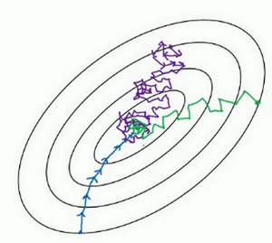
用mini-batch梯度下降法，我们从这里开始（最边缘绿色的点），一次迭代这样做，两次，三次，四次，它不会总朝向最小值靠近，但它比随机梯度下降要更持续地靠近最小值的方向，它也不一定在很小的范围内收敛或者波动，如果出现这个问题，可以慢慢减少学习率，我们在下个视频会讲到学习率衰减，也就是如何减小学习率。
如果mini-batch大小既不是1也不是 ，应该取中间值，那应该怎么选择呢？其实是有指导原则的。
首先，如果训练集较小，直接使用batch梯度下降法，样本集较小就没必要使用mini-batch梯度下降法，你可以快速处理整个训练集，所以使用batch梯度下降法也很好，这里的少是说小于2000个样本，这样比较适合使用batch梯度下降法。不然，样本数目较大的话，一般的mini-batch大小为64到512，考虑到电脑内存设置和使用的方式，如果mini-batch大小是2的 次方，代码会运行地快一些，64就是2的6次方，以此类推，128是2的7次方，256是2的8次方，512是2的9次方。所以我经常把mini-batch大小设成2的次方。在上一个视频里，我的mini-batch大小设为了1000，建议你可以试一下1024，也就是2的10次方。也有mini-batch的大小为1024，不过比较少见，64到512的mini-batch比较常见。
最后需要注意的是在你的mini-batch中，要确保 和 要符合CPU/GPU内存，取决于你的应用方向以及训练集的大小。如果你处理的mini-batch和CPU/GPU内存不相符，不管你用什么方法处理数据，你会注意到算法的表现急转直下变得惨不忍睹，所以我希望你对一般人们使用的mini-batch大小有一个直观了解。事实上mini-batch大小是另一个重要的变量，你需要做一个快速尝试，才能找到能够最有效地减少成本函数的那个，我一般会尝试几个不同的值，几个不同的2次方，然后看能否找到一个让梯度下降优化算法最高效的大小。希望这些能够指导你如何开始找到这一数值。
你学会了如何执行mini-batch梯度下降，令算法运行得更快，特别是在训练样本数目较大的情况下。不过还有个更高效的算法，比梯度下降法和mini-batch梯度下降法都要高效的多，我们在接下来的视频中将为大家一一讲解。
指数加权平均数（Exponentially weighted averages）
我想向你展示几个优化算法，它们比梯度下降法快，要理解这些算法，你需要用到指数加权平均，在统计中也叫做指数加权移动平均，我们首先讲这个，然后再来讲更复杂的优化算法。

虽然现在我生活在美国，实际上我生于英国伦敦。比如我这儿有去年伦敦的每日温度，所以1月1号，温度是40华氏度，相当于4摄氏度。我知道世界上大部分地区使用摄氏度，但是美国使用华氏度。在1月2号是9摄氏度等等。在年中的时候，一年365天，年中就是说，大概180天的样子，也就是5月末，温度是60华氏度，也就是15摄氏度等等。夏季温度转暖，然后冬季降温。
你用数据作图，可以得到以下结果，起始日在1月份，中间是夏季初，最后是12月末，看起来有些杂乱，如果要计算趋势的话，也就是温度的局部平均值，或者说移动平均值。
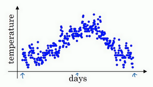

这里我们使用 表示温度均值， 表示温度实际值
你要做的是，首先使 ，每天，需要使用 0.9 的加权数之前的数值加上当日温度的 0.1倍，即 ，所以这里是第一天的温度值。
第二天，又可以获得一个加权平均数，0.9乘以之前的值加上当日的温度0.1倍，即 ，以此类推。
第二天值加上第三日数据的0.1，如此往下。大体公式就是某天的 等于前一天 值的0.9加上当日温度的0.1。
如此计算，然后用红线作图的话，便得到这样的结果。

你得到了移动平均值，每日温度的指数加权平均值。
看一下上一张幻灯片里的公式， ，我们把0.9这个常数变成 ，将之前的0.1变成 ，即
或许可以认为，距离当前日期越近的温度数据在预测当前日期温度上有更高的权重。
甚至有点类似于kalman 滤波，因为本质上，kalman 滤波做了 2 件事:
- 基于前一时间点的系统状态的概率分布给出当前时间点的系统状态的概率分布预测 P1
- 基于当前时间点的观测量的概率分布 Q 给出另一组对当前时间点系统状态的概率分布预测 P2 (这里需要注意，如果传感器能直接把系统状态都观测了，那么我们直接用观测量的概率分布 Q 作为 P2 就好了，但是有可能传感器观测的物理量量并不是直接的系统状态，而是其他物理量，这时我们需要通过做一个线性变换来获得 P2)

由于以后我们要考虑的原因，在计算时可视 大概是 的每日温度，如果 是0.9，你会想，这是十天的平均值，也就是红线部分。
我们来试试别的，将 设置为接近1的一个值，比如0.98，计算 ，这就是粗略平均了一下，过去50天的温度，这时作图可以得到绿线。
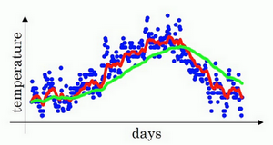
这个高值 要注意几点，你得到的曲线要平坦一些，原因在于你多平均了几天的温度，所以这个曲线，波动更小，更加平坦，缺点是曲线进一步右移，因为现在平均的温度值更多，要平均更多的值，指数加权平均公式在温度变化时，适应地更缓慢一些，所以会出现一定延迟，因为当 ，相当于给前一天的值加了太多权重，只有0.02的权重给了当日的值，所以温度变化时，温度上下起伏，当 较大时，指数加权平均值适应地更缓慢一些。
我们可以再换一个值试一试，如果 是另一个极端值，比如说0.5，根据右边的公式（ ），这是平均了两天的温度。
作图运行后得到黄线。

其实如果看过k线图，这其实在形状上很类似于MA数据，如图

由于仅平均了两天的温度，平均的数据太少，所以得到的曲线有更多的噪声，有可能出现异常值，但是这个曲线能够更快适应温度变化。
所以指数加权平均数经常被使用，再说一次，它在统计学中被称为指数加权移动平均值，我们就简称为指数加权平均数。通过调整这个参数（ ），或者说后面的算法学习，你会发现这是一个很重要的参数，可以取得稍微不同的效果，往往中间有某个值效果最好， 为中间值时得到的红色曲线，比起绿线和黄线更好地平均了温度。
现在你知道计算指数加权平均数的基本原理，下一个视频中，我们再聊聊它的本质作用。
理解指数加权平均数（Understanding exponentially weighted averages）
上个视频中，我们讲到了指数加权平均数，这是几个优化算法中的关键一环，而这几个优化算法能帮助你训练神经网络。本视频中，我希望进一步探讨算法的本质作用。
回忆一下这个计算指数加权平均数的关键方程。
的时候，得到的结果是红线，如果它更接近于1，比如0.98，结果就是绿线，如果 小一点，如果是0.5，结果就是黄线。

我们进一步地分析，来理解如何计算出每日温度的平均值。
同样的公式，
使 ，写下相应的几个公式，所以在执行的时候， 从0到1到2到3， 的值在不断增加，为了更好地分析，我写的时候使得 的值不断减小，然后继续往下写。

首先看第一个公式，理解 是什么？我们调换一下这两项（ ）， 。
那么 是什么？我们就代入这个公式（ ），所以：
。
那么 是什么？你可以用这个公式计算（ ），把公式代进去，所以：
。
以此类推，如果你把这些括号都展开，
所以这是一个加和并平均，100号数据，也就是当日温度。我们分析 的组成，也就是在一年第100天计算的数据，但是这个是总和，包括100号数据，99号数据，97号数据等等。画图的一个办法是，假设我们有一些日期的温度，所以这是数据，这是 ，所以100号数据有个数值，99号数据有个数值，98号数据等等， 为100，99，98等等，这就是数日的温度数值。

然后我们构建一个指数衰减函数，从0.1开始，到 ，到 ，以此类推，所以就有了这个指数衰减函数。

我们把最右侧竖线处当做当前值，可以看到越远离当前值的数值对当前值的影响权重是按指数函数递减的
计算 是通过，把两个函数对应的元素，然后求和，用这个数值100号数据值乘以0.1，99号数据值乘以0.1乘以 ，这是第二项，以此类推，所以选取的是每日温度，将其与指数衰减函数相乘，然后求和，就得到了 。
结果是，稍后我们详细讲解，不过所有的这些系数（ ），相加起来为1或者逼近1，我们称之为偏差修正，下个视频会涉及。
最后也许你会问，到底需要平均多少天的温度。实际上 大约为0.35，这大约是 ，e是自然算法的基础之一。大体上说，如果有 ，在这个例子中， ，所以 ， 约等于 ，大约是0.34，0.35，换句话说，10天后，曲线的高度下降到 ，相当于在峰值的 。
又因此当 的时候，我们说仿佛你在计算一个指数加权平均数，只关注了过去10天的温度，因为10天后，权重下降到不到当日权重的三分之一。
相反，如果，那么0.98需要多少次方才能达到这么小的数值？ 大约等于 ，所以前50天这个数值比 大，数值会快速衰减，所以本质上这是一个下降幅度很大的函数，你可以看作平均了50天的温度。因为在例子中，要代入等式的左边， ，所以 为50，我们由此得到公式，我们平均了大约 天的温度，这里 代替了 ，也就是说根据一些常数，你能大概知道能够平均多少日的温度，不过这只是思考的大致方向，并不是正式的数学证明。
最后讲讲如何在实际中执行，还记得吗？我们一开始将 设置为0，然后计算第一天 ，然后 ，以此类推。
现在解释一下算法，可以将 ， ， 等等写成明确的变量，不过在实际中执行的话，你要做的是，一开始将 初始化为0，然后在第一天使 ，然后第二天，更新 值， ，以此类推，有些人会把 加下标，来表示 是用来计算数据的指数加权平均数。
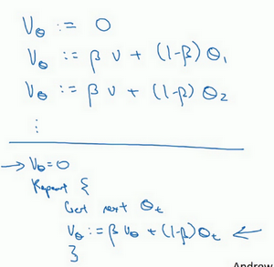
再说一次，但是换个说法， ，然后每一天，拿到第 天的数据，把 更新为 。
指数加权平均数公式的好处之一在于，它占用极少内存，电脑内存中只占用一行数字而已，然后把最新数据代入公式，不断覆盖就可以了，正因为这个原因，其效率，它基本上只占用一行代码，计算指数加权平均数也只占用单行数字的存储和内存，当然它并不是最好的，也不是最精准的计算平均数的方法。如果你要计算移动窗，你直接算出过去10天的总和，过去50天的总和，除以10和50就好，如此往往会得到更好的估测。但缺点是，如果保存所有最近的温度数据，和过去10天的总和，必须占用更多的内存，执行更加复杂，计算成本也更加高昂。
所以在接下来的视频中，我们会计算多个变量的平均值，从计算和内存效率来说，这是一个有效的方法，所以在机器学习中会经常使用，更不用说只要一行代码，这也是一个优势。
现在你学会了计算指数加权平均数，你还需要知道一个专业概念，叫做偏差修正，下一个视频我们会讲到它，接着你就可以用它构建更好的优化算法，而不是简单直接的梯度下降法。
指数加权平均的偏差修正（Bias correction in exponentially weighted averages）
你学过了如何计算指数加权平均数，有一个技术名词叫做偏差修正，可以让平均数运算更加准确，来看看它是怎么运行的。

在上一个视频中，这个（红色）曲线对应 的值为0.9，这个（绿色）曲线对应的 =0.98，如果你执行写在这里的公式，在 等于0.98的时候，得到的并不是绿色曲线，而是紫色曲线，你可以注意到紫色曲线的起点较低，我们来看看怎么处理。
计算移动平均数的时候，初始化 ， ，但是 ，所以这部分没有了（ ），所以 ，所以如果一天温度是40华氏度，那么 ，因此得到的值会小很多，所以第一天温度的估测不准。
，如果代入 ，然后相乘，所以 ，假设 和 都是正数，计算后 要远小于 和 ，所以 不能很好估测出这一年前两天的温度。
有个办法可以修改这一估测，让估测变得更好，更准确，特别是在估测初期，也就是不用 ，而是用 ， 就是现在的天数。举个具体例子，当 时， ，因此对第二天温度的估测变成了 ，也就是 和 的加权平均数，并去除了偏差。你会发现随着 增加， 接近于0，所以当 很大的时候，偏差修正几乎没有作用，因此当 较大的时候，紫线基本和绿线重合了。不过在开始学习阶段，你才开始预测热身练习，偏差修正可以帮助你更好预测温度，偏差修正可以帮助你使结果从紫线变成绿线。
在机器学习中，在计算指数加权平均数的大部分时候，大家不在乎执行偏差修正，因为大部分人宁愿熬过初始时期，拿到具有偏差的估测，然后继续计算下去。如果你关心初始时期的偏差，在刚开始计算指数加权移动平均数的时候，偏差修正能帮助你在早期获取更好的估测。
所以你学会了计算指数加权移动平均数，我们接着用它来构建更好的优化算法吧！
动量梯度下降法（Gradient descent with Momentum）
还有一种算法叫做Momentum，或者叫做动量梯度下降法，运行速度几乎总是快于标准的梯度下降算法，简而言之，基本的想法就是计算梯度的指数加权平均数，并利用该梯度更新你的权重，在本视频中，我们呢要一起拆解单句描述，看看你到底如何计算。
例如，如果你要优化成本函数，函数形状如图，红点代表最小值的位置，假设你从这里（蓝色点）开始梯度下降法，如果进行梯度下降法的一次迭代，无论是batch或mini-batch下降法，也许会指向这里，现在在椭圆的另一边，计算下一步梯度下降，结果或许如此，然后再计算一步，再一步，计算下去，你会发现梯度下降法要很多计算步骤对吧？

蓝色的梯度下降相当于慢慢摆动到最小值，这种上下波动减慢了梯度下降法的速度，你就无法使用更大的学习率，如果你要用较大的学习率（紫色箭头），结果可能会偏离函数的范围，为了避免摆动过大，你要用一个较小的学习率。

另一个看待问题的角度是，在纵轴上，你希望学习慢一点，因为你不想要这些摆动，但是在横轴上，你希望加快学习（更大的学习率），你希望快速从左向右移，移向最小值，移向红点。这其实是一种矛盾。
所以使用动量梯度下降法，你需要做的是，在每次迭代中，确切来说在第 次迭代的过程中，你会计算微分 ， ，我会省略上标 ，你用现有的mini-batch计算 ， 。如果你用batch梯度下降法，现在的mini-batch就是全部的batch，对于batch梯度下降法的效果是一样的。如果现有的mini-batch就是整个训练集，效果也不错，你要做的是计算 ，这跟我们之前的计算相似，也就是 ， 所以计算得到的是 的移动平均数，接着同样地计算 ， ，然后重新赋值权重， ，同样 ，这样就可以减缓梯度下降的幅度。
因为总是上下摆动，所以一平均，摆动就小了
例如，在上几个导数中，你会发现这些纵轴上的摆动平均值接近于零，所以在纵轴方向，你希望放慢一点，平均过程中，正负数相互抵消，所以平均值接近于零。但在横轴方向，所有的微分都指向横轴方向，因此横轴方向的平均值仍然较大，因此用算法几次迭代后，你发现动量梯度下降法，最终纵轴方向的摆动变小了，横轴方向运动更快，因此你的算法走了一条更加直接的路径，在抵达最小值的路上减少了摆动。如红线所示

动量梯度下降法的一个本质，这对有些人而不是所有人有效，就是如果你要最小化碗状函数，即函数类似于碗的形状，中间低四周高，只有一个极小值点。它们能够最小化碗状函数，这些微分项（），想象它们为你从山上往下滚的一个球，提供了加速度，Momentum项相当于速度。

想象你有一个碗，你拿一个球，微分项给了这个球一个加速度，此时球正向山下滚，球因为加速度越滚越快，而因为 稍小于1，表现出一些摩擦力，所以球不会无限加速下去，所以不像梯度下降法，每一步都独立于之前的步骤，你的球可以向下滚，获得动量，可以从碗向下加速获得动量。
最后我们来看具体如何计算，算法在此。
所以你有两个超参数，学习率 以及参数 ， 控制着指数加权平均数。 最常用的值是0.9，我们之前平均了过去十天的温度，所以现在平均了前十次迭代的梯度。实际上 为0.9时，效果不错，你可以尝试不同的值，可以做一些超参数的研究，不过0.9是很棒的鲁棒数。那么关于偏差修正，你要拿 和 除以 ，实际上人们不这么做，因为10次迭代之后，你的移动平均已经过了初始阶段。实际中，在使用梯度下降法或动量梯度下降法时，人们不会受到偏差修正的困扰。当然 初始值是0，要注意到这是和 拥有相同维数的零矩阵，也就是跟 拥有相同的维数， 的初始值也是向量零，所以和 拥有相同的维数，也就是和 是同一维数。
最后要说一点，如果你查阅了动量梯度下降法相关资料，你经常会看到一个被删除了的专业词汇， 被删除了，最后得到的是 。结果就是， 缩小了 倍，相当于乘以 ，所以你要用梯度下降最新值的话， 要根据 相应变化。实际上，二者效果都不错，只会影响到学习率 的最佳值。我觉得这个公式用起来没有那么自然，因为有一个影响，如果你最后要调整超参数 ，就会影响到 和 ，你也许还要修改学习率 ，所以我更喜欢原公式，而不是删去了 的这个公式，所以我更倾向于使用有 的这个公式，但是两个公式都将 设置为0.9，是超参数的常见选择，只是在这两个公式中，学习率 的调整会有所不同。
所以这就是动量梯度下降法，这个算法肯定要好于没有Momentum的梯度下降算法，我们还可以做别的事情来加快学习算法，我们将在接下来的视频中探讨这些问题。
RMSprop
你们知道了动量（Momentum）可以加快梯度下降，还有一个叫做RMSprop的算法，全称是root mean square prop算法，它也可以加速梯度下降，我们来看看它是如何运作的。

回忆一下我们之前的例子，如果你执行梯度下降，虽然横轴方向正在推进，但纵轴方向会有大幅度摆动，为了分析这个例子，假设纵轴代表参数 ，横轴代表参数 ，可能有 ， 或者其它重要的参数，为了便于理解，被称为 和 。
所以，你想减缓 方向的学习，即纵轴方向，同时加快，至少不是减缓横轴方向的学习，RMSprop算法可以实现这一点。

在第 次迭代中，该算法会照常计算当下mini-batch的微分 ， ，所以我会保留这个指数加权平均数，我们用到新符号 ，而不是 ，因此 ，这个平方的操作是针对这一整个符号的（element-wise），这样做能够保留微分平方的加权平均数，同样 ，再说一次，平方是针对整个符号的操作。
意思应该是
接着RMSprop会这样更新参数值， ， ，我们来理解一下其原理。记得在横轴方向或者在例子中的 方向，我们希望学习速度快，而在垂直方向，也就是例子中的 方向，我们希望减缓纵轴上的摆动，所以有了 和 ，我们希望 会相对较小，所以我们要除以一个较小的数，而希望 又较大，所以这里我们要除以较大的数字，这样就可以减缓纵轴上的变化。你看这些微分，垂直方向的要比水平方向的大得多（就是水平方向函数变化比垂直方向慢，图中椭圆可以看做碗状函数的等值线），所以斜率在 方向特别大，所以这些微分中， 较大， 较小，因为函数的倾斜程度，在纵轴上，也就是 方向上，要大于在横轴上，也就是 方向上。 的平方较大，所以 也会较大，而相比之下， 会小一些，亦或 平方会小一些，因此 会小一些，结果就是纵轴上的更新要被一个较大的数相除，就能消除摆动，而水平方向的更新则被较小的数相除。

RMSprop的影响就是你的更新最后会变成这样（绿色线），纵轴方向上摆动较小，而横轴方向继续推进。还有个影响就是，你可以用一个更大学习率 ，然后加快学习，而无须在纵轴上垂直方向偏离。
要说明一点，我一直把纵轴和横轴方向分别称为 和 ，只是为了方便展示而已。实际中，你会处于参数的高维度空间，所以需要消除摆动的垂直维度，你需要消除摆动，实际上是参数 ， 等的合集，水平维度可能 ， 等等，因此把 和 分开只是方便说明。实际中 是一个高维度的参数向量， 也是一个高维度参数向量，但是你的直觉是，在你要消除摆动的维度中，最终你要计算一个更大的和值，这个平方和微分的加权平均值，所以你最后去掉了那些有摆动的方向。所以这就是RMSprop，全称是均方根，因为你将微分进行平方，然后最后使用平方根。
最后再就这个算法说一些细节的东西，然后我们再继续。下一个视频中，我们会将RMSprop和Momentum结合起来，我们在Momentum中采用超参数 ，为了避免混淆，我们现在不用 ，而采用超参数 以保证在Momentum和RMSprop中采用同一超参数。要确保你的算法不会除以0，如果 的平方根趋近于0怎么办？得到的答案就非常大，为了确保数值稳定，在实际操练的时候，你要在分母上加上一个很小很小的 ， 是多少没关系， 是个不错的选择，这只是保证数值能稳定一些，无论什么原因，你都不会除以一个很小很小的数。所以RMSprop跟Momentum有很相似的一点，可以消除梯度下降中的摆动，包括mini-batch梯度下降，并允许你使用一个更大的学习率 ，从而加快你的算法学习速度。
所以你学会了如何运用RMSprop，这是给学习算法加速的另一方法。关于RMSprop的一个有趣的事是，它首次提出并不是在学术研究论文中，而是在多年前Jeff Hinton在Coursera的课程上。我想Coursera并不是故意打算成为一个传播新兴的学术研究的平台，但是却达到了意想不到的效果。就是从Coursera课程开始，RMSprop开始被人们广为熟知，并且发展迅猛。
我们讲过了Momentum，我们讲了RMSprop，如果二者结合起来，你会得到一个更好的优化算法，在下个视频中我们再好好讲一讲为什么。
Adam 优化算法(Adam optimization algorithm)
在深度学习的历史上，包括许多知名研究者在内，提出了优化算法，并很好地解决了一些问题，但随后这些优化算法被指出并不能一般化，并不适用于多种神经网络，时间久了，深度学习圈子里的人开始多少有些质疑全新的优化算法，很多人都觉得动量（Momentum）梯度下降法很好用，很难再想出更好的优化算法。所以RMSprop以及Adam优化算法（Adam优化算法也是本视频的内容），就是少有的经受住人们考验的两种算法，已被证明适用于不同的深度学习结构，这个算法我会毫不犹豫地推荐给你，因为很多人都试过，并且用它很好地解决了许多问题。
Adam优化算法基本上就是将Momentum和RMSprop结合在一起，那么来看看如何使用Adam算法。

使用Adam算法，首先你要初始化， ， ， ， ，在第 次迭代中，你要计算微分，用mini-batch计算 ， 。接下来计算Momentum指数加权平均数，所以 （使用 ，这样就不会跟超参数 混淆，因为后面RMSprop要用到 ），使用Momentum时我们肯定会用这个公式，但现在不叫它 ，而叫它 。同样 。
接着你用RMSprop进行更新，即用不同的超参数 ， ，再说一次，这里是对整个微分 进行平方处理， 。
相当于Momentum更新了超参数 ，RMSprop更新了超参数 。一般使用Adam算法的时候，要计算偏差修正， ，修正也就是在偏差修正之后， ，同样 ， 也使用偏差修正，也就是 ， 。
最后更新权重，所以 更新后是 （如果你只是用Momentum，使用 或者修正后的 ，但现在我们加入了RMSprop的部分，所以我们要除以修正后 的平方根加上 ）。
根据类似的公式更新 值， 。
所以Adam算法结合了Momentum和RMSprop梯度下降法，并且是一种极其常用的学习算法，被证明能有效适用于不同神经网络，适用于广泛的结构。

本算法中有很多超参数，超参数学习率 很重要，也经常需要调试，你可以尝试一系列值，然后看哪个有效。 常用的缺省值为0.9，这是 的移动平均数，也就是 的加权平均数，这是Momentum涉及的项。至于超参数 ，Adam论文作者，也就是Adam算法的发明者，推荐使用0.999，这是在计算 以及 的移动加权平均值，关于 的选择其实没那么重要，Adam论文的作者建议 为 ，但你并不需要设置它，因为它并不会影响算法表现。但是在使用Adam的时候，人们往往使用缺省值即可， ， 和 都是如此，我觉得没人会去调整 ，然后尝试不同的 值，看看哪个效果最好。你也可以调整 和 ，但我认识的业内人士很少这么干。
为什么这个算法叫做Adam？Adam代表的是Adaptive Moment Estimation， 用于计算这个微分（ ），叫做第一矩， 用来计算平方数的指数加权平均数（ ），叫做第二矩，所以Adam的名字由此而来，但是大家都简称Adam权威算法。
这就是关于Adam优化算法的全部内容，有了它，你可以更加快速地训练神经网络，在结束本周课程之前，我们还要讲一下超参数调整，以及更好地理解神经网络的优化问题有哪些。下个视频中，我们将讲讲学习率衰减。
学习率衰减(Learning rate decay)
加快学习算法的一个办法就是随时间慢慢减少学习率，我们将之称为学习率衰减，我们来看看如何做到，首先通过一个例子看看，为什么要计算学习率衰减。
假设你要使用mini-batch梯度下降法，mini-batch数量不大，大概64或者128个样本，在迭代过程中会有噪音（蓝色线），下降朝向这里的最小值，但是不会精确地收敛，所以你的算法最后在附近摆动，并不会真正收敛，因为你用的 是固定值，不同的mini-batch中有噪音。
但要慢慢减少学习率 的话，在初期的时候， 学习率还较大，你的学习还是相对较快，但随着 变小，你的步伐也会变慢变小，所以最后你的曲线（绿色线）会在最小值附近的一小块区域里摆动，而不是在训练过程中，大幅度在最小值附近摆动。
所以慢慢减少 的本质在于，在学习初期，你能承受较大的步伐，但当开始收敛的时候，小一些的学习率能让你步伐小一些。
你可以这样做到学习率衰减，前面讲过一代（1 epoch）要遍历一次数据，对于训练集，你应该拆分成不同的mini-batch，第一次遍历训练集叫做第一代。第二次就是第二代，依此类推，你可以将 学习率设为 （decay-rate称为衰减率，epoch-num为代数， 为初始学习率），注意这个衰减率是另一个你需要调整的超参数。
这里有一个具体例子，如果你计算了几代，也就是遍历了几次，如果 为0.2，衰减率decay-rate为1，那么在第一代中， ，这是在代入这个公式计算（ ），此时衰减率是1而代数是1。在第二代学习率为0.67，第三代变成0.5，第四代为0.4等等，你可以自己多计算几个数据。要理解，作为代数函数，根据上述公式，你的学习率呈递减趋势。如果你想用学习率衰减，要做的是要去尝试不同的值，包括超参数 ，以及超参数衰退率，找到合适的值，除了这个学习率衰减的公式，人们还会用其它的公式。

比如，这个叫做指数衰减，其中 相当于一个小于1的值，如 ，所以你的学习率呈指数下降。
人们用到的其它公式有 或者 （ 为mini-batch的数字）。
有时人们也会用一个离散下降的学习率，也就是某个步骤有某个学习率，一会之后，学习率减少了一半，一会儿减少一半，一会儿又一半，这就是离散下降（discrete stair cease）的意思。
到现在，我们讲了一些公式，看学习率 究竟如何随时间变化。人们有时候还会做一件事，手动衰减。如果你一次只训练一个模型，如果你要花上数小时或数天来训练，有些人的确会这么做，看看自己的模型训练，耗上数日，然后他们觉得，学习速率变慢了，我把 调小一点。手动控制 当然有用，时复一时，日复一日地手动调整 ，只有模型数量小的时候有用，但有时候人们也会这么做。
所以现在你有了多个选择来控制学习率 。你可能会想，好多超参数，究竟我应该做哪一个选择，我觉得，现在担心为时过早。下一周，我们会讲到，如何系统选择超参数。对我而言，学习率衰减并不是我尝试的要点，设定一个固定的 ，然后好好调整，会有很大的影响，学习率衰减的确大有裨益，有时候可以加快训练，但它并不是我会率先尝试的内容，但下周我们将涉及超参数调整，你能学到更多系统的办法来管理所有的超参数，以及如何高效搜索超参数。
这就是学习率衰减，最后我还要讲讲神经网络中的局部最优以及鞍点，所以能更好理解在训练神经网络过程中，你的算法正在解决的优化问题，下个视频我们就好好聊聊这些问题。
局部最优的问题(The problem of local optima)
在深度学习研究早期，人们总是担心优化算法会困在极差的局部最优，不过随着深度学习理论不断发展，我们对局部最优的理解也发生了改变。我向你展示一下现在我们怎么看待局部最优以及深度学习中的优化问题。
这是曾经人们在想到局部最优时脑海里会出现的图，也许你想优化一些参数，我们把它们称之为 和 ，平面的高度就是损失函数。在图中似乎各处都分布着局部最优。梯度下降法或者某个算法可能困在一个局部最优中，而不会抵达全局最优。如果你要作图计算一个数字，比如说这两个维度，就容易出现有多个不同局部最优的图，而这些低维的图曾经影响了我们的理解，但是这些理解并不正确。事实上，如果你要创建一个神经网络，通常梯度为零的点并不是这个图中的局部最优点，实际上成本函数的零梯度点，通常是鞍点。

也就是在这个点，坐标轴分别是 和 ，高度即成本函数 的值。

但是一个具有高维度空间的函数，如果梯度为0，那么在每个方向，它可能是凸函数，也可能是凹函数。如果你在2万维空间中，那么想要得到局部最优，所有的2万个方向都需要是这样，但发生的机率也许很小，也许是 ，你更有可能遇到有些方向的曲线会向上弯曲，另一些方向曲线向下弯，而不是所有的都向上弯曲，因此在高维度空间，你更可能碰到鞍点。
所以我们从深度学习历史中学到的一课就是，我们对低维度空间的大部分直觉，比如你可以画出上面的图，并不能应用到高维度空间中。适用于其它算法，因为如果你有2万个参数，那么 函数有2万个维度向量，你更可能遇到鞍点，而不是局部最优点。
如果局部最优不是问题，那么问题是什么？结果是平稳段会减缓学习，平稳段是一块区域，其中导数长时间接近于0，如果你在此处（最左边的蓝色点），梯度会从曲面从从上向下下降，因为梯度等于或接近0，曲面很平坦，你得花上很长时间慢慢抵达平稳段的这个点，因为左边或右边的随机扰动，我换个笔墨颜色，大家看得清楚一些，然后你的算法能够走出平稳段（红色笔）。也就是说我们沿着这段长坡走，直到鞍点这里，然后走出平稳段。

所以此次视频的要点是，首先，你不太可能困在极差的局部最优中，条件是你在训练较大的神经网络，存在大量参数，并且成本函数 被定义在较高的维度空间。
第二点，平稳段是一个问题，这样使得学习十分缓慢，这也是像Momentum或是RMSprop，Adam这样的算法，能够加速学习算法的地方。在这些情况下，更成熟的优化算法，如Adam算法，能够加快速度，让你尽早往下走出平稳段。
因为你的网络要解决优化问题，说实话，要面临如此之高的维度空间，我觉得没有人有那么好的直觉，知道这些空间长什么样，而且我们对它们的理解还在不断发展，不过我希望这一点能够让你更好地理解优化算法所面临的问题。
超参数调试，batch正则化和程序框架（Hyperparameter tuning, Batch Normalization and Programming Frameworks)
调试处理（Tuning process）
大家好，欢迎回来，目前为止，你已经了解到，神经网络的改变会涉及到许多不同超参数的设置。现在，对于超参数而言，你要如何找到一套好的设定呢？在此视频中，我想和你分享一些指导原则，一些关于如何系统地组织超参调试过程的技巧，希望这些能够让你更有效的聚焦到合适的超参设定中。

关于训练深度最难的事情之一是你要处理的参数的数量，从学习速率 到Momentum（动量梯度下降法）的参数 。如果使用Momentum或Adam优化算法的参数， ， 和 ，也许你还得选择层数，也许你还得选择不同层中隐藏单元的数量，也许你还想使用学习率衰减。所以，你使用的不是单一的学习率 。接着，当然你可能还需要选择mini-batch的大小。
结果证实一些超参数比其它的更为重要，我认为，最为广泛的学习应用是 ，学习速率是需要调试的最重要的超参数。
除了 ，还有一些参数需要调试，例如Momentum参数 ，0.9就是个很好的默认值。我还会调试mini-batch的大小，以确保最优算法运行有效。我还会经常调试隐藏单元，我用橙色圈住的这三个是我觉得相对于 而言次重要的超参数。重要性排第三位的是就是剩余的其他因素，层数有时会产生很大的影响，学习率衰减也是如此。当应用Adam算法时，事实上，我从不调试 ， 和 ，我总是选定其分别为0.9，0.999和 ，如果你想的话也可以调试它们。
但希望你粗略了解到哪些超参数较为重要， 无疑是最重要的，接下来是我用橙色圈住的那些，然后是我用紫色圈住的那些，但这不是严格且快速的标准，我认为，其它深度学习的研究者可能会很不同意我的观点或有着不同的直觉。
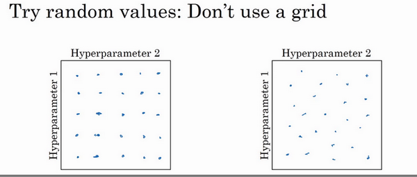
现在，如果你尝试调整一些超参数，该如何选择调试值呢？在早一代的机器学习算法中，如果你有两个超参数，这里我会称之为超参1，超参2，常见的做法是在网格中取样点，像这样，然后系统的研究这些数值。这里我放置的是5×5的网格，实践证明，网格可以是5×5，也可多可少，但对于这个例子，你可以尝试这所有的25个点，然后选择哪个参数效果最好。当参数的数量相对较少时，这个方法很实用。
在深度学习领域，我们常做的，我推荐你采用下面的做法，随机选择点，所以你可以选择同等数量的点，对吗？25个点，接着，用这些随机取的点试验超参数的效果。之所以这么做是因为，对于你要解决的问题而言，你很难提前知道哪个超参数最重要，正如你之前看到的，一些超参数的确要比其它的更重要。
举个例子，假设超参数1是 （学习速率），取一个极端的例子，假设超参数2是Adam算法中，分母中的 。在这种情况下， 的取值很重要，而 取值则无关紧要。如果你在网格中取点，接着，你试验了 的5个取值，那你会发现，无论 取何值，结果基本上都是一样的。所以，你知道共有25种模型，但进行试验的 值只有5个，我认为这是很重要的。
对比而言，如果你随机取值，你会试验25个独立的 ，似乎你更有可能发现效果做好的那个。
我已经解释了两个参数的情况，实践中，你搜索的超参数可能不止两个。假如，你有三个超参数，这时你搜索的不是一个方格，而是一个立方体，超参数3代表第三维，接着，在三维立方体中取值，你会试验大量的更多的值，三个超参数中每个都是。

实践中，你搜索的可能不止三个超参数有时很难预知，哪个是最重要的超参数，对于你的具体应用而言，随机取值而不是网格取值表明，你探究了更多重要超参数的潜在值，无论结果是什么。
当你给超参数取值时，另一个惯例是采用由粗糙到精细的策略。

比如在二维的那个例子中，你进行了取值，也许你会发现效果最好的某个点，也许这个点周围的其他一些点效果也很好，那在接下来要做的是放大这块小区域（小蓝色方框内），然后在其中更密集得取值或随机取值，聚集更多的资源，在这个蓝色的方格中搜索，如果你怀疑这些超参数在这个区域的最优结果，那在整个的方格中进行粗略搜索后，你会知道接下来应该聚焦到更小的方格中。在更小的方格中，你可以更密集得取点。所以这种从粗到细的搜索也经常使用。
通过试验超参数的不同取值，你可以选择对训练集目标而言的最优值，或对于开发集而言的最优值，或在超参搜索过程中你最想优化的东西。
我希望，这能给你提供一种方法去系统地组织超参数搜索过程。另一个关键点是随机取值和精确搜索，考虑使用由粗糙到精细的搜索过程。但超参数的搜索内容还不止这些，在下一个视频中，我会继续讲解关于如何选择超参数取值的合理范围。
为超参数选择合适的范围（Using an appropriate scale to pick hyperparameters）
在上一个视频中，你已经看到了在超参数范围中，随机取值可以提升你的搜索效率。但随机取值并不是在有效范围内的随机均匀取值，而是选择合适的标尺，用于探究这些超参数，这很重要。在这个视频中，我会教你怎么做。
假设你要选取隐藏单元的数量 ，假设，你选取的取值范围是从50到100中某点，这种情况下，看到这条从50-100的数轴，你可以随机在其取点，这是一个搜索特定超参数的很直观的方式。或者，如果你要选取神经网络的层数，我们称之为字母 ，你也许会选择层数为2到4中的某个值，接着顺着2，3，4随机均匀取样才比较合理，你还可以应用网格搜索，你会觉得2，3，4，这三个数值是合理的，这是在几个在你考虑范围内随机均匀取值的例子，这些取值还蛮合理的，但对某些超参数而言不适用。
看看这个例子，假设你在搜索超参数 （学习速率），假设你怀疑其值最小是0.0001或最大是1。如果你画一条从0.0001到1的数轴，沿其随机均匀取值，那90%的数值将会落在0.1到1之间，结果就是，在0.1到1之间，应用了90%的资源，而在0.0001到0.1之间，只有10%的搜索资源，这看上去不太对。
反而，用对数标尺搜索超参数的方式会更合理，因此这里不使用线性轴，分别依次取0.0001，0.001，0.01，0.1，1，在对数轴上均匀随机取点，这样，在0.0001到0.001之间，就会有更多的搜索资源可用，还有在0.001到0.01之间等等。
所以在Python中，你可以这样做，使r=-4*np.random.rand()，然后 随机取值， ，所以，第一行可以得出 ，那么 ，所以最左边的数字是 ，最右边是 。
更常见的情况是，如果你在 和 之间取值，在此例中，这是 （0.0001），你可以通过 算出 的值，即-4，在右边的值是 ，你可以算出 的值 ，即0。你要做的就是在 区间随机均匀地给 取值，这个例子中 ，然后你可以设置 的值，基于随机取样的超参数 。

所以总结一下，在对数坐标下取值，取最小值的对数就得到 的值，取最大值的对数就得到 值，所以现在你在对数轴上的 到 区间取值，在 ， 间随意均匀的选取 值，将超参数设置为 ，这就是在对数轴上取值的过程。
最后，另一个棘手的例子是给 取值，用于计算指数的加权平均值。假设你认为 是0.9到0.999之间的某个值，也许这就是你想搜索的范围。记住这一点，当计算指数的加权平均值时，取0.9就像在10个值中计算平均值，有点类似于计算10天的温度平均值，而取0.999就是在1000个值中取平均。
所以和上张幻灯片上的内容类似，如果你想在0.9到0.999区间搜索，那就不能用线性轴取值，对吧？不要随机均匀在此区间取值，所以考虑这个问题最好的方法就是，我们要探究的是 ，此值在0.1到0.001区间内，所以我们会给 取值，大概是从0.1到0.001，应用之前幻灯片中介绍的方法，这是 ，这是 ，值得注意的是，在之前的幻灯片里，我们把最小值写在左边，最大值写在右边，但在这里，我们颠倒了大小。这里，左边的是最大值，右边的是最小值。所以你要做的就是在 里随机均匀的给r取值。你设定了 ，所以 ，然后这就变成了在特定的选择范围内超参数随机取值。希望用这种方式得到想要的结果，你在0.9到0.99区间探究的资源，和在0.99到0.999区间探究的一样多。

所以，如果你想研究更多正式的数学证明，关于为什么我们要这样做，为什么用线性轴取值不是个好办法，这是因为当 接近1时，所得结果的灵敏度会变化，即使 有微小的变化。所以 在0.9到0.9005之间取值，无关紧要，你的结果几乎不会变化。
但 值如果在0.999到0.9995之间，这会对你的算法产生巨大影响，对吧？在这两种情况下，是根据大概10个值取平均。但这里，它是指数的加权平均值，基于1000个值，现在是2000个值，因为这个公式 ，当 接近1时， 就会对细微的变化变得很敏感。所以整个取值过程中，你需要更加密集地取值，在 接近1的区间内，或者说，当 接近于0时，这样，你就可以更加有效的分布取样点，更有效率的探究可能的结果。
希望能帮助你选择合适的标尺，来给超参数取值。如果你没有在超参数选择中作出正确的标尺决定，别担心，即使你在均匀的标尺上取值，如果数值总量较多的话，你也会得到还不错的结果，尤其是应用从粗到细的搜索方法，在之后的迭代中，你还是会聚焦到有用的超参数取值范围上。
希望这会对你的超参数搜索有帮助，下一个视频中，我们将会分享一些关于如何组建搜索过程的思考，希望它能使你的工作更高效。
超参数调试的实践：Pandas VS Caviar（Hyperparameters tuning in practice: Pandas vs. Caviar）
到现在为止，你已经听了许多关于如何搜索最优超参数的内容，在结束我们关于超参数搜索的讨论之前，我想最后和你分享一些建议和技巧，关于如何组织你的超参数搜索过程。
如今的深度学习已经应用到许多不同的领域，某个应用领域的超参数设定，有可能通用于另一领域，不同的应用领域出现相互交融。比如，我曾经看到过计算机视觉领域中涌现的巧妙方法，比如说Confonets或ResNets，这我们会在后续课程中讲到。它还成功应用于语音识别，我还看到过最初起源于语音识别的想法成功应用于NLP等等。
深度学习领域中，发展很好的一点是，不同应用领域的人们会阅读越来越多其它研究领域的文章，跨领域去寻找灵感。
就超参数的设定而言，我见到过有些直觉想法变得很缺乏新意，所以，即使你只研究一个问题，比如说逻辑学，你也许已经找到一组很好的参数设置，并继续发展算法，或许在几个月的过程中，观察到你的数据会逐渐改变，或也许只是在你的数据中心更新了服务器，正因为有了这些变化，你原来的超参数的设定不再好用，所以我建议，或许只是重新测试或评估你的超参数，至少每隔几个月一次，以确保你对数值依然很满意。
最后，关于如何搜索超参数的问题，我见过大概两种重要的思想流派或人们通常采用的两种重要但不同的方式。

一种是你照看一个模型，通常是有庞大的数据组，但没有许多计算资源或足够的CPU和GPU的前提下，基本而言，你只可以一次负担起试验一个模型或一小批模型，在这种情况下，即使当它在试验时，你也可以逐渐改良。比如，第0天，你将随机参数初始化，然后开始试验，然后你逐渐观察自己的学习曲线，也许是损失函数J，或者数据设置误差或其它的东西，在第1天内逐渐减少，那这一天末的时候，你可能会说，看，它学习得真不错。我试着增加一点学习速率，看看它会怎样，也许结果证明它做得更好，那是你第二天的表现。两天后，你会说，它依旧做得不错，也许我现在可以填充下Momentum或减少变量。然后进入第三天，每天，你都会观察它，不断调整你的参数。也许有一天，你会发现你的学习率太大了，所以你可能又回归之前的模型，像这样，但你可以说是在每天花时间照看此模型，即使是它在许多天或许多星期的试验过程中。所以这是一个人们照料一个模型的方法，观察它的表现，耐心地调试学习率，但那通常是因为你没有足够的计算能力，不能在同一时间试验大量模型时才采取的办法。
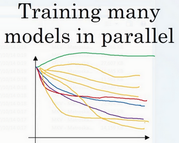
另一种方法则是同时试验多种模型，你设置了一些超参数，尽管让它自己运行，或者是一天甚至多天，然后你会获得像这样的学习曲线，这可以是损失函数 或实验误差或损失或数据误差的损失，但都是你曲线轨迹的度量。同时你可以开始一个有着不同超参数设定的不同模型，所以，你的第二个模型会生成一个不同的学习曲线，也许是像这样的一条（紫色曲线），我会说这条看起来更好些。与此同时，你可以试验第三种模型，其可能产生一条像这样的学习曲线（红色曲线），还有另一条（绿色曲线），也许这条有所偏离，像这样，等等。或者你可以同时平行试验许多不同的模型，橙色的线就是不同的模型。用这种方式你可以试验许多不同的参数设定，然后只是最后快速选择工作效果最好的那个。在这个例子中，也许这条看起来是最好的（下方绿色曲线）。

打个比方，我把左边的方法称为熊猫方式。当熊猫有了孩子，他们的孩子非常少，一次通常只有一个，然后他们花费很多精力抚养熊猫宝宝以确保其能成活，所以，这的确是一种照料，一种模型类似于一只熊猫宝宝。对比而言，右边的方式更像鱼类的行为，我称之为鱼子酱方式。在交配季节，有些鱼类会产下一亿颗卵，但鱼类繁殖的方式是，它们会产生很多卵，但不对其中任何一个多加照料，只是希望其中一个，或其中一群，能够表现出色。我猜，这就是哺乳动物繁衍和鱼类，很多爬虫类动物繁衍的区别。我将称之为熊猫方式与鱼子酱方式，因为这很有趣，更容易记住。
所以这两种方式的选择，是由你拥有的计算资源决定的，如果你拥有足够的计算机去平行试验许多模型，那绝对采用鱼子酱方式，尝试许多不同的超参数，看效果怎么样。但在一些应用领域，比如在线广告设置和计算机视觉应用领域，那里的数据太多了，你需要试验大量的模型，所以同时试验大量的模型是很困难的，它的确是依赖于应用的过程。但我看到那些应用熊猫方式多一些的组织，那里，你会像对婴儿一样照看一个模型，调试参数，试着让它工作运转。尽管，当然，甚至是在熊猫方式中，试验一个模型，观察它工作与否，也许第二或第三个星期后，也许我应该建立一个不同的模型（绿色曲线），像熊猫那样照料它，我猜，这样一生中可以培育几个孩子，即使它们一次只有一个孩子或孩子的数量很少。

所以希望你能学会如何进行超参数的搜索过程，现在，还有另一种技巧，能使你的神经网络变得更加坚实，它并不是对所有的神经网络都适用，但当适用时，它可以使超参数搜索变得容易许多并加速试验过程，我们在下个视频中再讲解这个技巧。
归一化网络的激活函数（Normalizing activations in a network）
在深度学习兴起后，最重要的一个思想是它的一种算法，叫做Batch归一化，由Sergey loffe和Christian Szegedy两位研究者创造。Batch归一化会使你的参数搜索问题变得很容易，使神经网络对超参数的选择更加稳定，超参数的范围会更加庞大，工作效果也很好，也会是你的训练更加容易，甚至是深层网络。让我们来看看Batch归一化是怎么起作用的吧。

这里公式写错了，应该是
当训练一个模型，比如logistic回归时，你也许会记得，归一化输入特征可以加快学习过程。你计算了平均值，从训练集中减去平均值，计算了方差，接着根据方差归一化你的数据集（如上图公式），在之前的视频中我们看到，这是如何把学习问题的轮廓，从很长的东西，变成更圆的东西，更易于算法优化。所以这是有效的，对logistic回归和神经网络的归一化输入特征值而言。
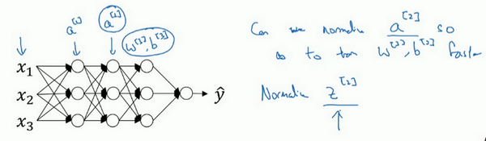
那么更深的模型呢？你不仅输入了特征值 ，而且第一层有激活值 ，第二层有激活值 等等。如果你想训练这些参数，比如 ， ，那归一化 的平均值和方差岂不是很好？以便使 ， 的训练更有效率。在logistic回归的例子中，我们看到了如何归一化 ， ， ，会帮助你更有效的训练 和 。
所以问题来了，对任何一个隐藏层而言，我们能否归一化 值，在此例中是 的值，但实际上可以是任何隐藏层的，因为 是下一层的输入值，所以就会影响 ， 的训练（目的是以更快的速度训练 ， ）。简单来说，这就是Batch归一化的作用。尽管严格来说，我们真正归一化的不是 ，而是 ，深度学习文献中有一些争论，关于在激活函数之前是否应该将值 归一化，或是否应该在应用激活函数 后再规范值。实践中，经常做的是归一化 ，所以这就是我介绍的版本，我推荐其为默认选择，那下面就是Batch归一化的使用方法。
在神经网络中，已知一些中间值，假设你有一些隐藏单元值，从 到 ，这些来源于隐藏层，所以这样写会更准确，即 为隐藏层， 从1到 ，但这样书写，我省略 及方括号，以便简化这一行的符号。所以已知这些值，如下，你要计算平均值，强调一下，所有这些都是针对 层，但我省略 及方括号，然后用正如你常用的那个公式计算方差，接着，你会取每个 值，使其规范化，方法如下，减去均值再除以标准偏差，为了使数值稳定，通常将 作为分母，以防 的情况。

所以现在我们已把这些 值标准化，化为含平均值0和标准单位方差，所以 的每一个分量都含有平均值0和方差1，但我们不想让隐藏单元总是含有平均值0和方差1，也许隐藏单元有了不同的分布会有意义，所以我们所要做的就是计算，我们称之为 ， ，这里 和 是你模型的学习参数（learnable parameter），所以我们使用梯度下降或一些其它类似梯度下降的算法，比如Momentum或者Nesterov，Adam，你会更新 和 ，正如更新神经网络的权重一样。
请注意 和 的作用是，你可以随意设置 的平均值，事实上，如果 ，如果 等于这个分母项（ 中的分母）， 等于 ，这里的这个值是 中的 ，那么 的作用在于，它会精确转化这个方程，如果这些成立（ ），那么 。
通过对 和 合理设定，规范化过程，即这四个等式（下图左边的），从根本来说，只是计算恒等函数，通过赋予 和 其它值，可以使你构造含其它平均值和方差的隐藏单元值。

所以，在网络匹配这个单元的方式，之前可能是用 ， 等等，现在则会用 取代 ，方便神经网络中的后续计算。如果你想放回 ，以清楚的表明它位于哪层，你可以把它放这。

所以我希望你学到的是，归一化输入特征 是怎样有助于神经网络中的学习，Batch归一化的作用是它适用的归一化过程，不只是输入层，甚至同样适用于神经网络中的深度隐藏层。你应用Batch归一化了一些隐藏单元值中的平均值和方差，不过训练输入和这些隐藏单元值的一个区别是，你也许不想隐藏单元值必须是平均值0和方差1。
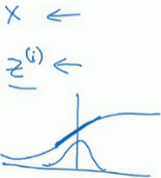
比如，如果你有sigmoid激活函数，你不想让你的值总是全部集中在这里（以零点为中心的正态分布），你想使它们有更大的方差，或不是0的平均值，以便更好的利用非线性的sigmoid函数，而不是使所有的值都集中于这个线性版本中，这就是为什么有了 和 两个参数后，你可以确保所有的 值可以是你想赋予的任意值，或者它的作用是保证隐藏的单元已使均值和方差标准化。
均值和方差由两参数控制，即 和 ，学习算法可以设置为任何值，所以它真正的作用是，使隐藏单元值的均值和方差标准化，即 有固定的均值和方差，均值和方差可以是0和1，也可以是其它值，它是由 和 两参数控制的。
我希望你能学会怎样使用Batch归一化，至少就神经网络的单一层而言，在下一个视频中，我会教你如何将Batch归一化与神经网络甚至是深度神经网络相匹配。对于神经网络许多不同层而言，又该如何使它适用，之后，我会告诉你，Batch归一化有助于训练神经网络的原因。所以如果觉得Batch归一化起作用的原因还显得有点神秘，那跟着我走，在接下来的两个视频中，我们会弄清楚。
将 Batch Norm 拟合进神经网络（Fitting Batch Norm into a neural network）
你已经看到那些等式，它可以在单一隐藏层进行Batch归一化，接下来，让我们看看它是怎样在深度网络训练中拟合的吧。
假设你有一个这样的神经网络，我之前说过，你可以认为每个单元负责计算两件事。第一，它先计算 ，然后应用其到激活函数中再计算 ，所以我可以认为，每个圆圈代表着两步的计算过程。同样的，对于下一层而言，那就是 和 等。所以如果你没有应用Batch归一化，你会把输入 拟合到第一隐藏层，然后首先计算 ，这是由 和 两个参数控制的。接着，通常而言，你会把 拟合到激活函数以计算 。但Batch归一化的做法是将 值进行Batch归一化，简称BN，此过程将由 和 两参数控制，这一操作会给你一个新的规范化的 值（ ），然后将其输入激活函数中得到 ，即 。

现在，你已在第一层进行了计算，此时Batch归一化发生在 的计算和 之间，接下来，你需要应用 值来计算 ，此过程是由 和 控制的。与你在第一层所做的类似，你会将 进行Batch归一化，现在我们简称BN，这是由下一层的Batch归一化参数所管制的，即 和 ，现在你得到 ，再通过激活函数计算出 等等。
所以需要强调的是Batch归一化是发生在计算 和 之间的。直觉就是，与其应用没有归一化的 值，不如用归一过的 ，这是第一层（ ）。第二层同理，与其应用没有规范过的 值，不如用经过方差和均值归一后的 。所以，你网络的参数就会是 ， ， 和 等等，我们将要去掉这些参数。但现在，想象参数 ， 到 ， ，我们将另一些参数加入到此新网络中 ， ， ， 等等。对于应用Batch归一化的每一层而言。需要澄清的是，请注意，这里的这些 （ ， 等等）和超参数 没有任何关系，下一张幻灯片中会解释原因，后者是用于Momentum或计算各个指数的加权平均值。Adam论文的作者，在论文里用 代表超参数。Batch归一化论文的作者，则使用 代表此参数（ ， 等等），但这是两个完全不同的 。我在两种情况下都决定使用 ，以便你阅读那些原创的论文，但Batch归一化学习参数 ， 等等和用于Momentum、Adam、RMSprop算法中的 不同。

所以现在，这是你算法的新参数，接下来你可以使用想用的任何一种优化算法，比如使用梯度下降法来执行它。
举个例子，对于给定层，你会计算 ，接着更新参数 为 。你也可以使用Adam或RMSprop或Momentum，以更新参数 和 ，并不是只应用梯度下降法。
即使在之前的视频中，我已经解释过Batch归一化是怎么操作的，计算均值和方差，减去均值，再除以方差，如果它们使用的是深度学习编程框架，通常你不必自己把Batch归一化步骤应用于Batch归一化层。因此，探究框架，可写成一行代码，比如说，在TensorFlow框架中，你可以用这个函数（tf.nn.batch_normalization）来实现Batch归一化，我们稍后讲解，但实践中，你不必自己操作所有这些具体的细节，但知道它是如何作用的，你可以更好的理解代码的作用。但在深度学习框架中，Batch归一化的过程，经常是类似一行代码的东西。
所以，到目前为止，我们已经讲了Batch归一化，就像你在整个训练站点上训练一样，或就像你正在使用Batch梯度下降法。
和 之间箭头下方是BN，就是Batch Norm的缩写
实践中，Batch归一化通常和训练集的mini-batch一起使用。你应用Batch归一化的方式就是，你用第一个mini-batch( )，然后计算 ，这和上张幻灯片上我们所做的一样，应用参数 和 ，使用这个mini-batch( )。接着，继续第二个mini-batch( )，接着Batch归一化会减去均值，除以标准差，由 和 重新缩放，这样就得到了 ，而所有的这些都是在第一个mini-batch的基础上，你再应用激活函数得到 。然后用 和 计算 ，等等，所以你做的这一切都是为了在第一个mini-batch( )上进行一步梯度下降法。
类似的工作，你会在第二个mini-batch（ ）上计算 ，然后用Batch归一化来计算 ，所以Batch归一化的此步中，你用第二个mini-batch（ ）中的数据使 归一化，这里的Batch归一化步骤也是如此，让我们来看看在第二个mini-batch（ ）中的例子，在mini-batch上计算 的均值和方差，重新缩放的 和 得到 ，等等。
然后在第三个mini-batch（ ）上同样这样做，继续训练。
现在，我想澄清此参数的一个细节。先前我说过每层的参数是 和 ，还有 和 ，请注意计算 的方式如下， ，但Batch归一化做的是，它要看这个mini-batch，先将 归一化为结果为均值0和标准方差，再由 和 $$\gamma$$ 重缩放，但这意味着，无论 的值是多少，都是要被减去的，因为在Batch归一化的过程中，你要计算 的均值，再减去平均值，在此例中的mini-batch中增加任何常数，数值都不会改变，因为加上的任何常数都将会被均值减去所抵消。
所以，如果你在使用Batch归一化，其实你可以消除这个参数（ ），或者你也可以，暂时把它设置为0，那么，参数变成 ，然后你计算归一化的 ， ，你最后会用参数 ，以便决定 的取值，这就是原因。

所以总结一下，因为Batch归一化超过了此层 的均值， 这个参数没有意义，所以，你必须去掉它，由 代替，这是个控制参数，会影响转移或偏置条件。
最后，请记住 的维数，因为在这个例子中，维数会是 ， 的尺寸为 ，如果是 层隐藏单元的数量，那 和 的维度也是 ，因为这是你隐藏层的数量，你有 隐藏单元，所以 和 用来将每个隐藏层的均值和方差缩放为网络想要的值。
让我们总结一下关于如何用Batch归一化来应用梯度下降法，假设你在使用mini-batch梯度下降法，你运行 到batch数量的for循环，你会在mini-batch 上应用正向prop，每个隐藏层都应用正向prop，用Batch归一化代替 为 。接下来，它确保在这个mini-batch中， 值有归一化的均值和方差，归一化均值和方差后是 ，然后，你用反向prop计算 和 ，及所有l层所有的参数， 和 。尽管严格来说，因为你要去掉 ，这部分其实已经去掉了。最后，你更新这些参数： ，和以前一样， ，对于 也是如此 。
如果你已将梯度计算如下，你就可以使用梯度下降法了，这就是我写到这里的，但也适用于有Momentum、RMSprop、Adam的梯度下降法。与其使用梯度下降法更新mini-batch，你可以使用这些其它算法来更新，我们在之前几个星期中的视频中讨论过的，也可以应用其它的一些优化算法来更新由Batch归一化添加到算法中的 和 参数。

我希望，你能学会如何从头开始应用Batch归一化，如果你想的话。如果你使用深度学习编程框架之一，我们之后会谈。你可以直接调用别人的编程框架，这会使Batch归一化的使用变得很容易。
现在，以防Batch归一化仍然看起来有些神秘，尤其是你还不清楚为什么其能如此显著的加速训练，我们进入下一个视频，详细讨论Batch归一化为何效果如此显著，它到底在做什么。
Batch Norm 为什么奏效？（Why does Batch Norm work?）
为什么Batch归一化会起作用呢？
一个原因是，你已经看到如何归一化输入特征值 ，使其均值为0，方差1，它又是怎样加速学习的，有一些从0到1而不是从1到1000的特征值，通过归一化所有的输入特征值 ，以获得类似范围的值，可以加速学习。所以Batch归一化起的作用的原因，直观的一点就是，它在做类似的工作，但不仅仅对于这里的输入值，还有隐藏单元的值。这只是Batch归一化作用的冰山一角，还有些深层的原理，它会有助于你对Batch归一化的作用有更深的理解，让我们一起来看看吧。
Batch归一化有效的第二个原因是，它可以使权重比你的网络更滞后或更深（it makes weights, later or deeper than your network），比如，相比于神经网络中前层的权重，比如第1层，第10层的权重更能经受得住变化，为了解释我的意思，让我们来看看这个最生动形象的例子。

这是一个网络的训练，也许是个浅层网络，比如logistic回归或是一个神经网络，或者像这个回归函数。或一个深层网络，建立在我们著名的猫脸识别检测上，但假设你已经在所有黑猫的图像上训练了数据集，如果现在你要把此网络应用于有色猫，这种情况下，正面的例子不只是左边的黑猫，还有右边其它颜色的猫，那么你的泛化可能适用的不会很好。

如果图像中，你的训练集是这个样子的，你的正面例子（红圈）在这儿，反面例子（黑叉）在那儿（左图），但你试图把它们都统一于一个数据集，也许正面例子在这，反面例子在那儿（右图）。你无法期待在左边训练得很好的模块，同样在右边也运行得很好，即使存在运行都很好的同一个函数，但你不会希望你的学习算法去发现绿色的决策边界，如果只看左边数据的话。
所以使你数据改变分布的这个想法，有个有点怪的名字“Covariate shift”，想法是这样的，如果你已经学习了 到 的映射，如果 的分布改变了，那么你可能需要重新训练你的学习算法。这种做法同样适用于，如果真实函数由 到 映射保持不变，正如此例中，因为真实函数是此图片是否是一只猫，训练你的函数的需要变得更加迫切，如果真实函数也改变，情况就更糟了。

“Covariate shift”的问题怎么应用于神经网络呢？试想一个像这样的深度网络，让我们从这层（第三层）来看看学习过程。此网络已经学习了参数 和 ，从第三隐藏层的角度来看，它从前层中取得一些值，接着它需要做些什么，使希望输出值 接近真实值 。

让我先遮住左边的部分，从第三隐藏层的角度来看，它得到一些值，称为 ， ， ， ，但这些值也可以是特征值 ， ， ， ，第三层隐藏层的工作是找到一种方式，使这些值映射到 ，你可以想象做一些截断，所以这些参数 和 或 和 或 和 ，也许是学习这些参数，所以网络做的不错，从左边我用黑色笔写的映射到输出值 。
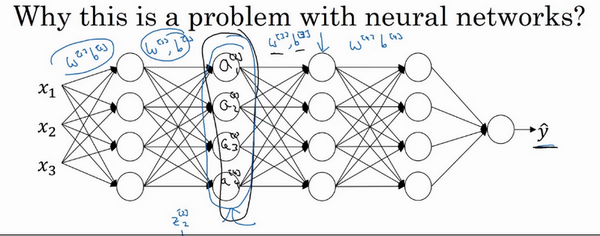
现在我们把网络的左边揭开，这个网络还有参数 ， 和 ， ，如果这些参数改变，这些 的值也会改变。所以从第三层隐藏层的角度来看，这些隐藏单元的值在不断地改变，所以它就有了“Covariate shift”的问题，上张幻灯片中我们讲过的。

所以Batch归一化做的，是它减少了这些隐藏值分布变化的数量。如果是绘制这些隐藏的单元值的分布，也许这是重整值 ，这其实是 ， ，我要绘制两个值而不是四个值，以便我们设想为2D，Batch归一化讲的是 ， 的值可以改变，它们也的确会改变，当神经网络在之前层中更新参数，Batch归一化可以确保无论其怎样变化， ， 的均值和方差保持不变，所以即使 ， 的值改变，至少他们的均值和方差也会是均值0，方差1，或不一定必须是均值0，方差1，而是由 和 决定的值。如果神经网络选择的话，可强制其为均值0，方差1，或其他任何均值和方差。但它做的是，它限制了在前层的参数更新，会影响数值分布的程度，第三层看到的这种情况，因此得到学习。
Batch归一化减少了输入值改变的问题，它的确使这些值变得更稳定，神经网络的之后层就会有更坚实的基础。即使使输入分布改变了一些，它会改变得更少。它做的是当前层保持学习，当改变时，迫使后层适应的程度减小了，你可以这样想，它减弱了前层参数的作用与后层参数的作用之间的联系，它使得网络每层都可以自己学习，稍稍独立于其它层，这有助于加速整个网络的学习。
所以，希望这能带给你更好的直觉，重点是Batch归一化的意思是，尤其从神经网络后层之一的角度而言，前层不会左右移动的那么多，因为它们被同样的均值和方差所限制，所以，这会使得后层的学习工作变得更容易些。
Batch归一化还有一个作用，它有轻微的正则化效果**，Batch归一化中非直观的一件事是，每个mini-batch，我会说mini-batch 的值为 ， ，在mini-batch计算中，由均值和方差缩放的，因为在mini-batch上计算的均值和方差，而不是在整个数据集上，均值和方差有一些小的噪声，因为它只在你的mini-batch上计算，比如64或128或256或更大的训练例子。因为均值和方差有一点小噪音，因为它只是由一小部分数据估计得出的。缩放过程从 到 ，过程也有一些噪音，因为它是用有些噪音的均值和方差计算得出的。

所以和dropout相似，它往每个隐藏层的激活值上增加了噪音，dropout有增加噪音的方式，它使一个隐藏的单元，以一定的概率乘以0，以一定的概率乘以1，所以你的dropout含几重噪音（multiple of noise），因为它乘以0或1。
对比而言，Batch归一化含几重噪音（multiples of noise），是因为标准偏差的缩放和减去均值带来的额外噪音。这里的均值和标准差的估计值也是有噪音的，所以类似于dropout，Batch归一化有轻微的正则化效果，因为给隐藏单元添加了噪音，这迫使后部单元不过分依赖任何一个隐藏单元，类似于dropout，它给隐藏层增加了噪音，因此有轻微的正则化效果。因为添加的噪音很微小，所以并不是巨大的正则化效果，你可以将Batch归一化和dropout一起使用，如果你想得到dropout更强大的正则化效果。
“这里的均值和标准差的估计值也是有噪音的”：指的是使用的不是所有数据集而是一部分来求 ，所以方差和均值都不是整个样本例子的真实方差和均值，而是一个mini-batch的
也许另一个轻微非直观的效果是，如果你应用了较大的mini-batch，对，比如说，你用了512而不是64，通过应用较大的min-batch，你减少了噪音（类似于大数定理了），因此减少了正则化效果，这是dropout的一个奇怪的性质，就是应用较大的mini-batch可以减少正则化效果。
说到这儿，我会把Batch归一化当成一种正则化，这确实不是其目的，但有时它会对你的算法有额外的期望效应或非期望效应。但是不要把Batch归一化当作正则化，把它当作将你归一化隐藏单元激活值并加速学习的方式，我认为正则化几乎是一个意想不到的副作用。
所以希望这能让你更理解Batch归一化的工作，在我们结束Batch归一化的讨论之前，我想确保你还知道一个细节。Batch归一化一次只能处理一个mini-batch数据，它在mini-batch上计算均值和方差。所以测试时，你试图做出预测，试着评估神经网络，你也许没有mini-batch的例子，你也许一次只能进行一个简单的例子，所以测试时，你需要做一些不同的东西以确保你的预测有意义。
在下一个也就是最后一个Batch归一化视频中，让我们详细谈谈你需要注意的一些细节，来让你的神经网络应用Batch归一化来做出预测。
测试时的 Batch Norm（Batch Norm at test time）
Batch归一化将你的数据以mini-batch的形式逐一处理，但在测试时，你可能需要对每个样本逐一处理，我们来看一下怎样调整你的网络来做到这一点。
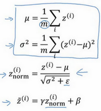
回想一下，在训练时，这些就是用来执行Batch归一化的等式。在一个mini-batch中，你将mini-batch的 值求和，计算均值，所以这里你只把一个mini-batch中的样本都加起来，我用m来表示这个mini-batch中的样本数量，而不是整个训练集。然后计算方差，再算 ，即用均值和标准差来调整，加上 是为了数值稳定性。 是用 和 再次调整 得到的。
请注意用于调节计算的 和 是在整个mini-batch上进行计算，但是在测试时，你可能不能将一个mini-batch中的6428或2056个样本同时处理，因此你需要用其它方式来得到 和 ，而且如果你只有一个样本，一个样本的均值和方差没有意义。那么实际上，为了将你的神经网络运用于测试，就需要单独估算 和 ，在典型的Batch归一化运用中，你需要用一个指数加权平均来估算，这个平均数涵盖了所有mini-batch，接下来我会具体解释。

我们选择 层，假设我们有mini-batch， ， ， ……以及对应的 值等等，那么在为 层训练 时，你就得到了 ，我还是把它写做第一个mini-batch和这一层的 吧，（ ）。当你训练第二个mini-batch，在这一层和这个mini-batch中，你就会得到第二个 （ ）值。然后在这一隐藏层的第三个mini-batch，你得到了第三个 （ ）值。正如我们之前用的指数加权平均来计算 ， ， 的均值，当时是试着计算当前气温的指数加权平均，你会这样来追踪你看到的这个均值向量的最新平均值，于是这个指数加权平均就成了你对这一隐藏层的 均值的估值。同样的，你可以用指数加权平均来追踪你在这一层的第一个mini-batch中所见的 的值，以及第二个mini-batch中所见的 的值等等。因此在用不同的mini-batch训练神经网络的同时，能够得到你所查看的每一层的 和 的平均数的实时数值。
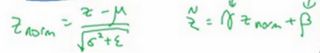
最后在测试时，对应这个等式（ ），你只需要用你的 值来计算 ，用 和 的指数加权平均，用你手头的最新数值来做调整，然后你可以用左边我们刚算出来的 和你在神经网络训练过程中得到的 和 参数来计算你那个测试样本的 值。
总结一下就是，在训练时， 和 是在整个mini-batch上计算出来的包含了像是64或28或其它一定数量的样本，但在测试时，你可能需要根据你的训练集估算 和 逐一处理样本，估算的方式有很多种，理论上你可以在最终的网络中运行整个训练集来得到 和 ，但在实际操作中，我们通常运用指数加权平均来追踪在训练过程中你看到的 和 的值。还可以用指数加权平均，有时也叫做流动平均来粗略估算 和 ，然后在测试中使用 和 的值来进行你所需要的隐藏单元 值的调整。在实践中，不管你用什么方式估算 和 ，这套过程都是比较稳健的，因此我不太会担心你具体的操作方式，而且如果你使用的是某种深度学习框架，通常会有默认的估算 和 的方式，应该一样会起到比较好的效果。但在实践中，任何合理的估算你的隐藏单元 值的均值和方差的方式，在测试中应该都会有效。
Batch归一化就讲到这里，使用Batch归一化，你能够训练更深的网络，让你的学习算法运行速度更快，在结束这周的课程之前，我还想和你们分享一些关于深度学习框架的想法，让我们在下一段视频中一起讨论这个话题。
Softmax 回归（Softmax regression）
到目前为止，我们讲到过的分类的例子都使用了二分分类，这种分类只有两种可能的标记0或1，这是一只猫或者不是一只猫，如果我们有多种可能的类型的话呢？有一种logistic回归的一般形式，叫做Softmax回归，能让你在试图识别某一分类时做出预测，或者说是多种分类中的一个，不只是识别两个分类，我们来一起看一下。

假设你不单需要识别猫，而是想识别猫，狗和小鸡，我把猫加做类1，狗为类2，小鸡是类3，如果不属于以上任何一类，就分到“其它”或者说“以上均不符合”这一类，我把它叫做类0。这里显示的图片及其对应的分类就是一个例子。我们将会用符号表示，大写的 来表示你的输入会被分入的类别总个数，在这个例子中，我们有4种可能的类别，包括“其它”或“以上均不符合”这一类。指示类别的数字，就是从0到 ，换句话说就是0、1、2、3。

在这个例子中，我们将建立一个神经网络，其输出层有4个，或者说 个输出单元，因此 ，即输出层也就是 层的单元数量，等于4，或者一般而言等于 。我们想要输出层单元的数字告诉我们这4种类型中每个的概率有多大，所以这里的第一个节点(最后输出方格内的第1个圆圈)输出的应该是或者说我们希望它输出“其它”类的概率。在输入 的情况下，这个(最后输出方格内的第2个圆圈)会输出猫的概率。在输入 的情况下，这个会输出狗的概率(最后输出方格内的第3个圆圈)。在输入 的情况下，输出小鸡的概率（最后输出方格内的第4个圆圈），我把小鸡缩写为bc（baby chick）。因此这里的 将是一个 维向量，因为它必须输出四个数字，给你这四种概率，且输出中的四个数字加起来应该等于1。
让你的网络做到这一点的标准模型要用到Softmax层，以及输出层来生成输出，我把式子写下来，然后回过头来，就会对Softmax的作用有一点感觉了。

在神经网络的最后一层，你将会像往常一样计算各层的线性部分，首先计算 ， ，算出了 之后，你需要应用Softmax激活函数，这个激活函数对于Softmax层而言有些不同，它的作用是这样的。首先，我们要计算一个临时变量，我们把它叫做 ，它等于 ，这适用于每个元素，在我们的例子中， 是4×1的，四维向量 ，这是对所有元素求幂， 也是一个4×1维向量，然后输出的 ，基本上就是向量 ，但是会归一化，使和为1。因此 ，换句话说， 也是一个4×1维向量，而这个四维向量的第 个元素，我把它写下来， ，以防这里的计算不够清晰易懂，我们马上会举个例子来详细解释。
我们来看一个例子，详细解释，假设你算出了 ， 是一个四维向量，假设为 ，我们要做的就是用这个元素取幂方法来计算 ，所以 ，如果你按一下计算器就会得到以下值 ，我们从向量 得到向量 就只需要将这些项目归一化，使总和为1。如果你把 的元素都加起来，把这四个数字加起来，得到176.3，最终 。

例如这里的第一个节点，它会输出 ，这样说来，对于这张图片，如果这是你得到的 值( )，它是类0的概率就是84.2%。下一个节点输出 ，也就是4.2%的几率。下一个是 。最后一个是 ，也就是11.4%的概率属于类3，也就是小鸡组，对吧？这就是它属于类0，类1，类2，类3的可能性。
神经网络的输出 ，也就是 ，是一个4×1维向量，这个4×1向量的元素就是我们算出来的这四个数字( )，所以这种算法通过向量 计算出总和为1的四个概率。
如果我们总结一下从 到 的计算步骤，整个计算过程，从计算幂到得出临时变量 ，再归一化，我们可以将此概括为一个Softmax激活函数。设 ，这一激活函数的与众不同之处在于，这个激活函数 需要输入一个4×1维向量，然后输出一个4×1维向量。之前，我们的激活函数都是接受单行数值输入，例如Sigmoid和ReLu激活函数，输入一个实数，输出一个实数。Softmax激活函数的特殊之处在于，因为需要将所有可能的输出归一化，就需要输入一个向量，最后输出一个向量。
那么Softmax分类器还可以代表其它的什么东西么？我来举几个例子，你有两个输入 ， ，它们直接输入到Softmax层，它有三四个或者更多的输出节点，输出 ，我将向你展示一个没有隐藏层的神经网络，它所做的就是计算 ，而输出的出 ，或者说 ， ，就是 的Softmax激活函数，这个没有隐藏层的神经网络应该能让你对Softmax函数能够代表的东西有所了解。
这个例子中（左边图），原始输入只有 和 ，一个 个输出分类的Softmax层能够代表这种类型的决策边界，请注意这是几条线性决策边界，但这使得它能够将数据分到3个类别中，在这张图表中，我们所做的是选择这张图中显示的训练集，用数据的3种输出标签来训练Softmax分类器，图中的颜色显示了Softmax分类器的输出的阈值，输入的着色是基于三种输出中概率最高的那种。因此我们可以看到这是logistic回归的一般形式，有类似线性的决策边界，但有超过两个分类，分类不只有0和1，而是可以是0，1或2。
这是（中间图）另一个Softmax分类器可以代表的决策边界的例子，用有三个分类的数据集来训练，这里（右边图）还有一个。对吧，但是直觉告诉我们，任何两个分类之间的决策边界都是线性的，这就是为什么你看到，比如这里黄色和红色分类之间的决策边界是线性边界，紫色和红色之间的也是线性边界，紫色和黄色之间的也是线性决策边界，但它能用这些不同的线性函数来把空间分成三类。

我们来看一下更多分类的例子，这个例子中（左边图） ，因此这个绿色分类和Softmax仍旧可以代表多种分类之间的这些类型的线性决策边界。另一个例子（中间图）是 类，最后一个例子（右边图）是 ，这显示了Softmax分类器在没有隐藏层的情况下能够做到的事情，当然更深的神经网络会有 ，然后是一些隐藏单元，以及更多隐藏单元等等，你就可以学习更复杂的非线性决策边界，来区分多种不同分类。
我希望你了解了神经网络中的Softmax层或者Softmax激活函数有什么作用，下一个视频中，我们来看一下你该怎样训练一个使用Softmax层的神经网络。
训练一个 Softmax 分类器（Training a Softmax classifier）
上一个视频中我们学习了Softmax层和Softmax激活函数，在这个视频中，你将更深入地了解Softmax分类，并学习如何训练一个使用了Softmax层的模型。
回忆一下我们之前举的的例子，输出层计算出的 如下， 我们有四个分类 ， 可以是 4×1 维向量，我们计算了临时变量 ， ，对元素进行幂运算，最后，如果你的输出层的激活函数 是Softmax激活函数，那么输出就会是这样的：

简单来说就是用临时变量 将它归一化，使总和为1，于是这就变成了 ，你注意到向量 中，最大的元素是5，而最大的概率也就是第一种概率。

Softmax这个名称的来源是与所谓hardmax对比，hardmax会把向量 变成这个向量 ，hardmax函数会观察 的元素，然后在 中最大元素的位置放上1，其它位置放上0，所这是一个hard max，也就是最大的元素的输出为1，其它的输出都为0。与之相反，Softmax所做的从 到这些概率的映射更为温和，我不知道这是不是一个好名字，但至少这就是softmax这一名称背后所包含的想法，与hardmax正好相反。
有一点我没有细讲，但之前已经提到过的，就是Softmax回归或Softmax激活函数将logistic激活函数推广到 类，而不仅仅是两类，结果就是如果 ，那么 的Softmax实际上变回了logistic回归，我不会在这个视频中给出证明，但是大致的证明思路是这样的，如果 ，并且你应用了Softmax，那么输出层 将会输出两个数字，如果 的话，也许输出0.842和0.158，对吧？这两个数字加起来要等于1，因为它们的和必须为1，其实它们是冗余的，也许你不需要计算两个，而只需要计算其中一个，结果就是你最终计算那个数字的方式又回到了logistic回归计算单个输出的方式。这算不上是一个证明，但我们可以从中得出结论，Softmax回归将logistic回归推广到了两种分类以上。
接下来我们来看怎样训练带有Softmax输出层的神经网络，具体而言，我们先定义训练神经网络使会用到的损失函数。举个例子，我们来看看训练集中某个样本的目标输出，真实标签是 ，用上一个视频中讲到过的例子，这表示这是一张猫的图片，因为它属于类1，现在我们假设你的神经网络输出的是 ， 是一个包括总和为1的概率的向量， ，你可以看到总和为1，这就是 ， 。对于这个样本神经网络的表现不佳，这实际上是一只猫，但却只分配到20%是猫的概率，所以在本例中表现不佳。
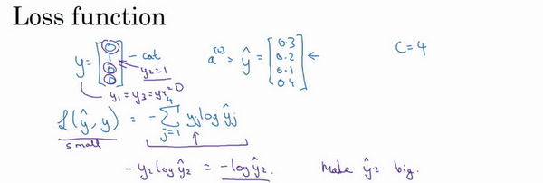
那么你想用什么损失函数来训练这个神经网络？在Softmax分类中，我们一般用到的损失函数是 ，我们来看上面的单个样本来更好地理解整个过程。注意在这个样本中 ，因为这些都是0，只有 ，如果你看这个求和，所有含有值为0的 的项都等于0，最后只剩下 ，因为当你按照下标 全部加起来，所有的项都为0，除了 时，又因为 ，所以它就等于 。
这就意味着，如果你的学习算法试图将它变小，因为梯度下降法是用来减少训练集的损失的，要使它变小的唯一方式就是使 变小，要想做到这一点，就需要使 尽可能大，因为这些是概率，所以不可能比1大，但这的确也讲得通，因为在这个例子中 是猫的图片，你就需要这项输出的概率尽可能地大（ 中第二个元素）。
概括来讲，损失函数所做的就是它找到你的训练集中的真实类别，然后试图使该类别相应的概率尽可能地高，如果你熟悉统计学中最大似然估计，这其实就是最大似然估计的一种形式。但如果你不知道那是什么意思，也不用担心，用我们刚刚讲过的算法思维也足够了。
这是单个训练样本的损失，整个训练集的损失 又如何呢？也就是设定参数的代价之类的，还有各种形式的偏差的代价，它的定义你大致也能猜到，就是整个训练集损失的总和，把你的训练算法对所有训练样本的预测都加起来，
因此你要做的就是用梯度下降法，使这里的损失最小化。

最后还有一个实现细节，注意因为 ， 是一个4×1向量， 也是一个4×1向量，如果你实现向量化，矩阵大写 就是 ，例如如果上面这个样本是你的第一个训练样本，那么矩阵 ，那么这个矩阵 最终就是一个 维矩阵。类似的， ，这个其实就是 （ ），或是第一个训练样本的输出，那么 ， 本身也是一个 维矩阵。

最后我们来看一下，在有Softmax输出层时如何实现梯度下降法，这个输出层会计算 ，它是 维的，在这个例子中是4×1，然后你用Softmax激活函数来得到 或者说 ，然后又能由此计算出损失。我们已经讲了如何实现神经网络前向传播的步骤，来得到这些输出，并计算损失，那么反向传播步骤或者梯度下降法又如何呢？其实初始化反向传播所需要的关键步骤或者说关键方程是这个表达式 ，你可以用 这个4×1向量减去 这个4×1向量，你可以看到这些都会是4×1向量，当你有4个分类时，在一般情况下就是 ，这符合我们对 的一般定义，这是对 损失函数的偏导数（ ），如果你精通微积分就可以自己推导，或者说如果你精通微积分，可以试着自己推导，但如果你需要从零开始使用这个公式，它也一样有用。

有了这个，你就可以计算 ，然后开始反向传播的过程，计算整个神经网络中所需要的所有导数。

但在这周的初级练习中，我们将开始使用一种深度学习编程框架，对于这些编程框架，通常你只需要专注于把前向传播做对，只要你将它指明为编程框架，前向传播，它自己会弄明白怎样反向传播，会帮你实现反向传播，所以这个表达式值得牢记（ ），如果你需要从头开始，实现Softmax回归或者Softmax分类，但其实在这周的初级练习中你不会用到它，因为编程框架会帮你搞定导数计算。
Softmax分类就讲到这里，有了它，你就可以运用学习算法将输入分成不止两类，而是 个不同类别。接下来我想向你展示一些深度学习编程框架，可以让你在实现深度学习算法时更加高效，让我们在下一个视频中一起讨论。
TensorFlow
自学即可